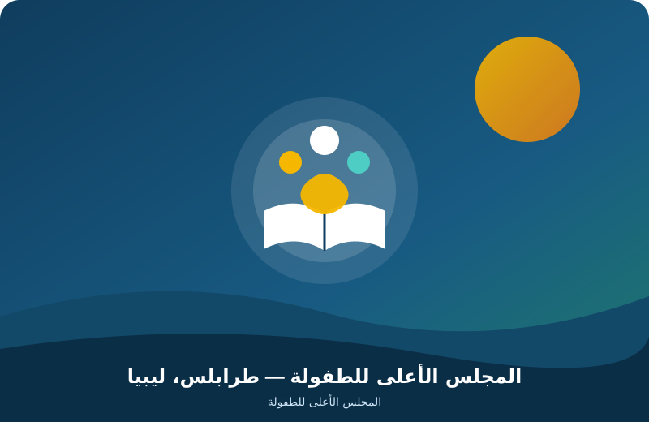

معرض الصور والملفات البصرية
البطاقات واللوحات البصرية المدمجة ضمن المجلد assets/images/ ويمكن استبدالها بأي صور إضافية بنفس الأسماء أو تحديث مساراتها.

الهوية البصرية والواجهة الرئيسية
المجلس الأعلى للطفولة — طرابلس، ليبيا.

ملصق الفيلم الوثائقي
إطار بصري للسرد الوثائقي وتوثيق الأنشطة.

الأرشيف وتنسيق المراسلات
حفظ السجلات ومتابعة المعاملات والوثائق.

منظومة الحماية والرعاية
صون حقوق الطفل وتوفير بيئة آمنة.